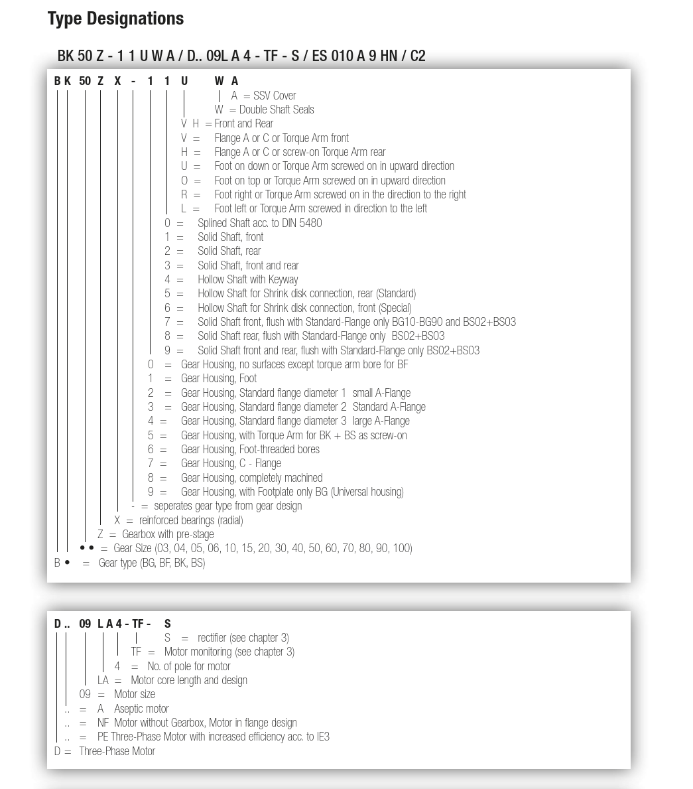
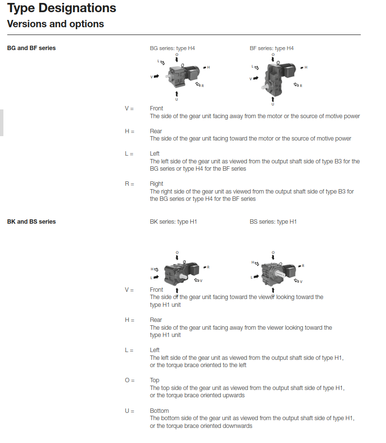
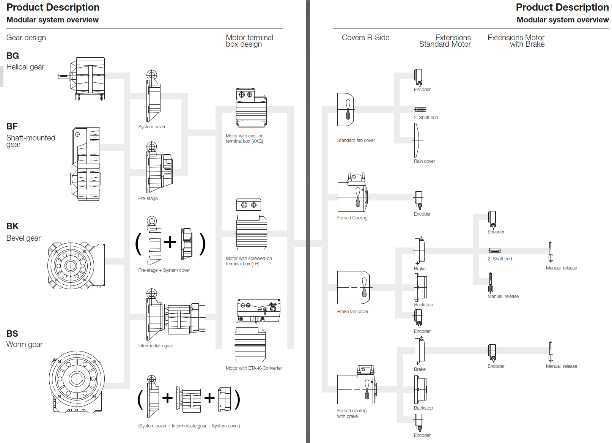

Vue d'ensemble et désignations des modèles
Motoréducteurs BAUER
Caractéristiques techniques des motoréducteurs BAUER
Inclut les motoréducteurs à engrenages cylindriques, à montage sur arbre, à couple conique et à vis sans fin.

Le tableau de configuration complet des motoréducteurs BAUER se trouve ci-dessus.
* Remarque : Les paramètres de puissance moteur maximale se rapportent à des moteurs 4 pôles standard à une fréquence de réseau de 50 Hz. WeDrive garantit une transmission de puissance précise grâce à la technologie avancée de BAUER.

Données techniques
Types de montage

